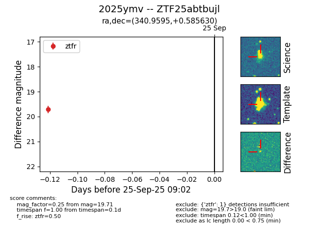

FINK: ZTF25abtbujl
Lasair: ZTF25abtbujl
ALeRCE: ZTF25abtbujl
TNS: 2025ymv
YSE: 2025ymv
ZTF25abtbujl (ztf,fink)
2025ymv (tns,yse)
equatorial (ra, dec) = (340.9595,+0.58563)
galactic (l, b) = (69.7939,-48.66621)

last ztfr=19.71
1 ztfr detections